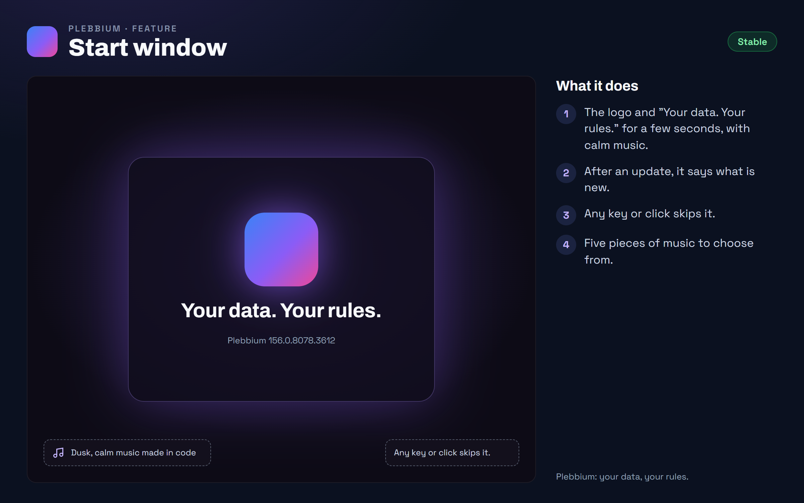

All features › Shipped › Start window
Start window
Stablesince 3608Open Plebbium from its icon and it greets you: its logo, "Your data. Your rules." and a few seconds of calm music made in code, then Plebbium opens as it fades. After an update it says what is new.

How to use it
- Open Plebbium from its icon: the start window plays, then Plebbium opens.
- Skip it: any key or click.
- Choose the music, turn it off, or play it now: Plebbium settings › Start.
When it arrived
156.0.8078.3607Beta 19 Oct 2026 · Stable 19 Oct 2026 (3608)
The start window.
156.0.8078.360819 Oct 2026 · Beta and Stable
It plays its whole length first, then Plebbium opens.
Why it works this way
Your data. Your rules.
The point of Plebbium in four words: you decide what happens to your data.
Music made in code
The music is played by code, not a recording: no audio file, nothing to license, and it sounds the same every time.
Only when you open it
It plays when you open Plebbium from its icon, never for an extra window, a link from another app or a desktop search.